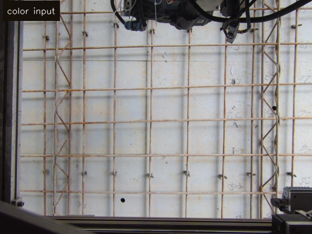
01 原始彩色输入
/Scepter/color/image_raw；只作现场背景参照。
基于仓库内 slam_v30 视觉模态快照离线生成，扫描分支按当前代码的 2026-04-22
manual workspace S2 口径重跑：depth-only 背景差分、纵横 profile 周期相位、透视网格反投影。
固定识别位姿下，前端触发仍进入 /pointAI/process_image 的
request_mode=3。算法只看手动工作区内的原始相机深度，展开到 rectified 平面后
做周期相位估计，再把规则网格映射回原图并输出相机坐标点。

/Scepter/color/image_raw；只作现场背景参照。
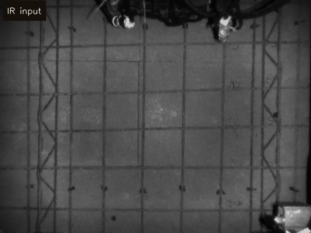
/Scepter/ir/image_raw；当前扫描最终叠加图的底图。
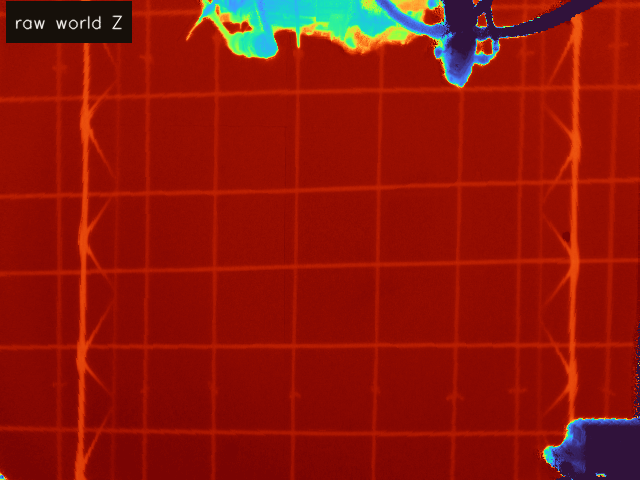
/Scepter/worldCoord/raw_world_coord 的 Z 通道，扫描算法只用这一路做响应。
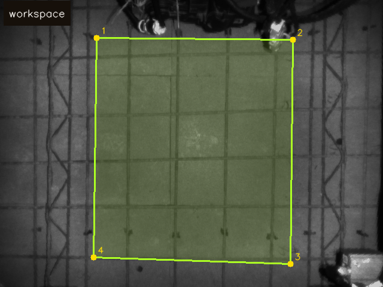
前端保存的四边形工作区，后续只在这个区域内透视展开和取点。
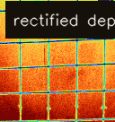
四边形工作区被展开到 rectified 平面，宽高由四角相机坐标尺度估计。
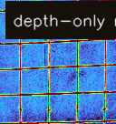
当前版本只取 depth 背景差分响应，不混入 IR 响应。
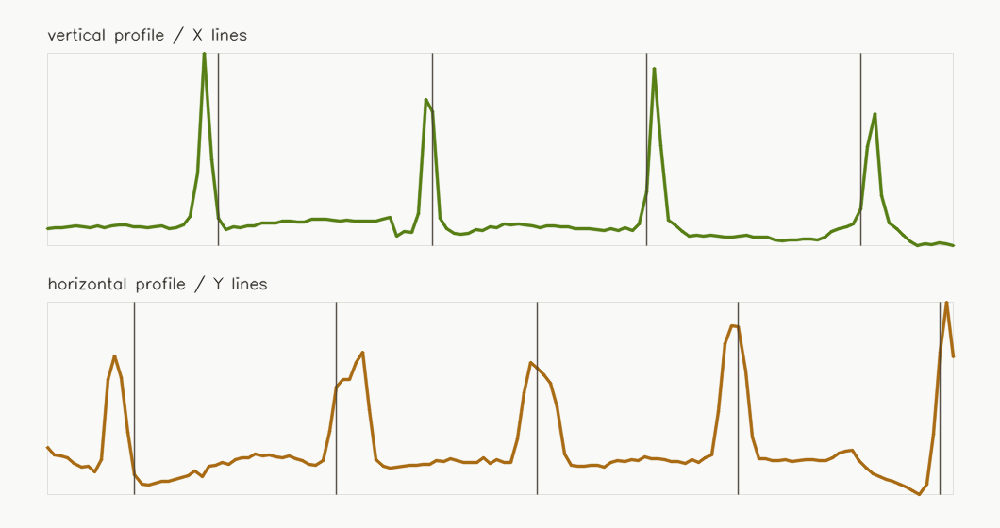
分别沿 X/Y 方向投影响应，估计 period 与 phase。
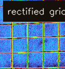
按估计出的纵横线位置构造规则网格，交点仍在 rectified 平面。
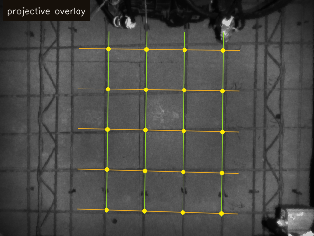
将 rectified 网格线和交点通过 inverse H 投回原图。
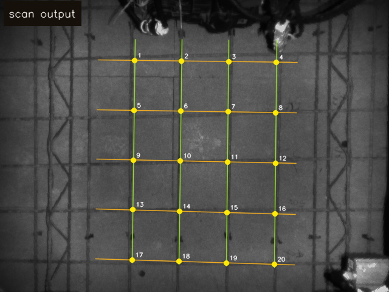
最终输出有效相机坐标点，同步用于 /coordinate_point 与扫描账本。
执行层逐区到位后不复用扫描网格主链，而是读取平面分割后的
/Scepter/worldCoord/world_coord，构造二值图、提取近水平/垂直 Hough 线段，
再聚类交点并进入执行范围筛选。
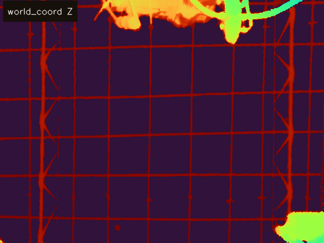
执行微调读取 /Scepter/worldCoord/world_coord，使用 Z 通道构造非平面区域。
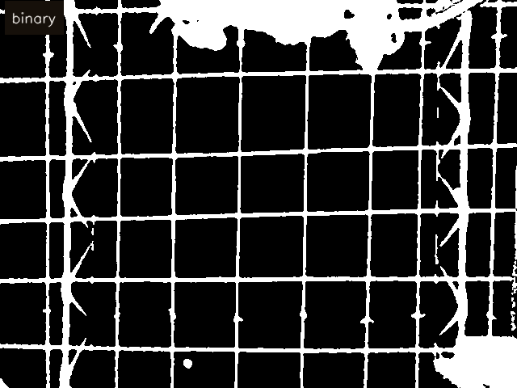
按当前阈值逻辑保留非平面深度像素，再做小连通域清理。
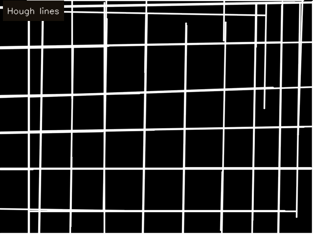
二值图细化后运行 HoughLinesP，只保留近水平或近垂直线段。
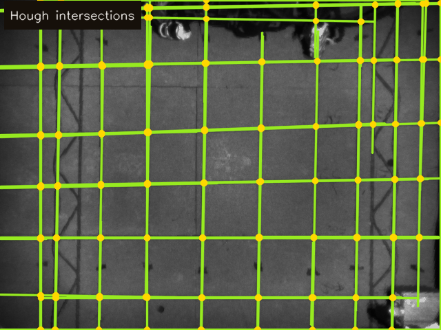
线段交点聚类后进入执行范围筛选，输出局部执行候选点。
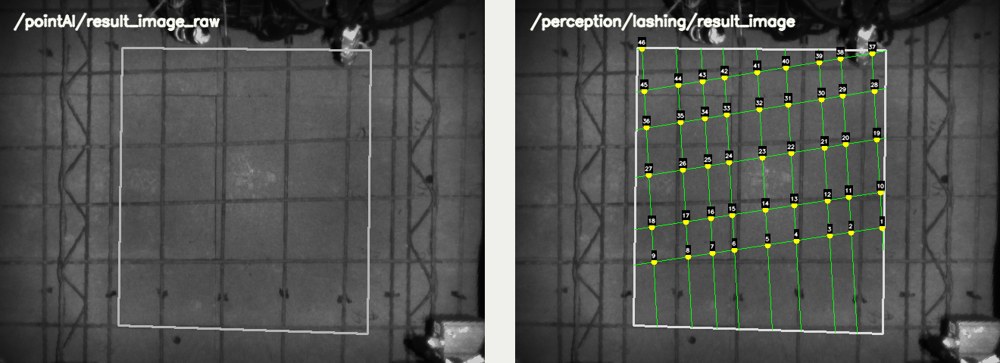
离线快照中的结果话题预览；现场运行时由上面的当前算法实时发布。
src/tie_robot_perception/tools/build_current_visual_recognition_flow_page.py。
重新采集现场样例后，可替换 docs/releases/slam_v30/visual_modalities 下的快照并重新运行脚本生成新图。